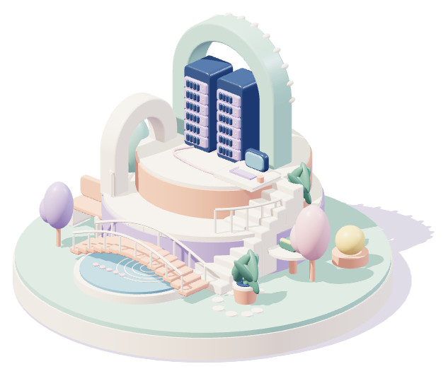

Small worlds.
Big curiosity.
A few imagined places for the things I like figuring out.

Showing the still illustration. Browsing works as usual.
The homelab garden
A little room for servers, experiments, and the satisfaction of getting things to work.
Original illustrations of my interests — not client projects or case studies.
The person behind the worlds.
Developer. Problem solver.
Always making room to learn.
I like the moment when a complicated problem starts to make sense.
My background is in Dynamics365F&O and ERP. I work through requirements, technical design, implementation, testing, deployment and support — with the people who need it to work.
Outside that work, I’m curious about Raspberry Pi homelabs, AI-assisted work processes, and AI-assisted web apps. These miniature places are a playful way to share that curiosity.
Have a small, useful thing in mind?
I’m employed full-time, so freelance work needs to fit a contained scope: remote, evenings, or asynchronous. I’m also interested in technical lead and senior opportunities.
Find me on LinkedInLocal design preview. No contact form, messages sent, or details stored here.